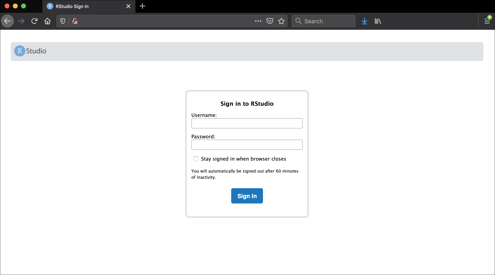
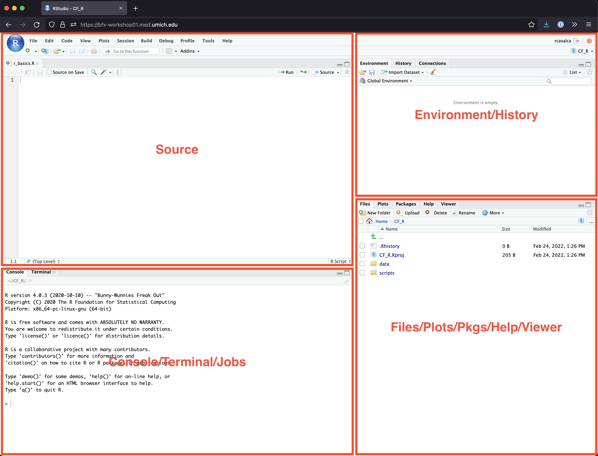
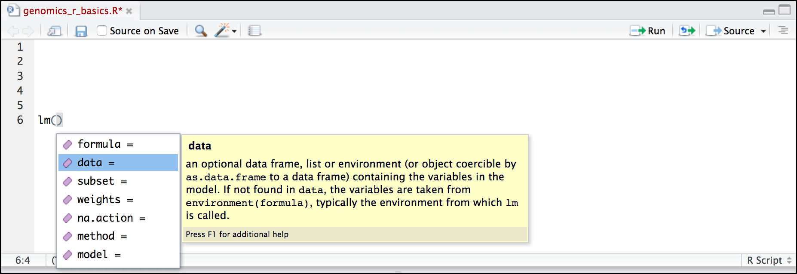

Introducing R and RStudio IDE
Getting ready to use R for the first time
In this lesson we will take you through the very first things you need to get R working.
Tip: This lesson works best on the cloud
Remember, these lessons assume we are using the pre-configured virtual machine instances provided to you at a genomics workshop. Much of this work could be done on your laptop, but we use instances to simplify workshop setup requirements, and to get you familiar with using the cloud (a common requirement for working with big data). Visit the Genomics Workshop setup page for details on getting this instance running on your own, or for the info you need to do this on your own computer.
A Brief History of R
R has been around since 1995, and was created by Ross Ihaka and Robert Gentleman at the University of Auckland, New Zealand. R is based off the S programming language developed at Bell Labs and was developed to teach intro statistics. See this slide deck by Ross Ihaka for more info on the subject.
Advantages of using R
At more than 20 years old, R is fairly mature and has a thriving community. Here are key advantages of analyzing data in R:
- R is open source. This means R is free - an advantage if you are at an institution where you have to pay for your own MATLAB or SAS license. Open source, is important to your colleagues in parts of the world where expensive software in inaccessible. It also means that R is actively developed by a community (see r-project.org), and there are regular updates.
- R is widely used. Because, R is used in many areas (not just bioinformatics), you are more likely to find help online when you need it. Chances are, almost any error message you run into, someone else has already experienced.
- R is powerful. R runs on multiple platforms (Windows/MacOS/Linux). It can work with much larger datasets than popular spreadsheet programs like Microsoft Excel, and because of its scripting capabilities is far more reproducible. Also, there are thousands of available software packages for science, including genomics and other areas of life science.
Discussion: Your experience
What has motivated you to learn R? Have you had a research question for which spreadsheet programs such as Excel have proven difficult to use, or where the size of the data set created issues?
Introducing RStudio Server
In these lessons, we will be making use of RStudio, an Integrated Development Environment (IDE). RStudio, like most IDEs, provides a graphical interface to R, making it user-friendly, and providing dozens of useful features. We will introduce additional benefits of using RStudio as you cover the lessons. In this case, we are specifically using RStudio Server, a version of RStudio that can be accessed in your web browser. RStudio Server has the same features of the Desktop version of RStudio you could download as standalone software.
Log on to RStudio Server
Open a web browser and enter the following URL.
http://bfx-workshop01.med.umich.eduTip: Make sure there are no spaces before or after your URL or your web browser may interpret it as a search query.
You should now be looking at a page that will allow you to login to the RStudio server:

Enter your user credentials and click Sign In. The credentials were provided via email, but if you forget yours, a helper can retrieve it for you.
You should now see the RStudio interface:

Create an RStudio project
One of the first benefits we will take advantage of in RStudio is something called an RStudio Project. An RStudio project allows you to more easily:
- Save data, files, variables, packages, etc. related to a specific analysis project
- Restart work where you left off
- Collaborate, especially if you are using version control such as git.
- To create a project, go to the File menu, and click New Project…. The following window will appear:

In this window, select Existing Directory. For “Project working directory”, click Browse…, select the “CF_R” folder, and click Choose. This will use the
/home/workshop/user/CF_Rfolder as the project directory.Finally click Create Project. In the “Files” tab of your output pane (more about the RStudio layout in a moment), you should see an RStudio project file, CF_R.Rproj. All RStudio projects end with the “.Rproj” file extension.
Note that there is already a data/ folder which contains
the data we will use for these lessons.
Creating your first R script
Now that we are ready to start exploring R, we will want to keep a record of the commands we are using. To do this we can create an R script:
- Click the File menu and select New File and then R Script.
- Before we go any further, save your script by clicking the save/disk icon that is in the bar above the first line in the script editor, or click the File menu and select Save.
- In the “Save File” window that opens, select New Folder. Name it “scripts”.
- Finally, name your file “r_basics” in the “File name” field.
The new script r_basics.R is now in the
scripts folder. You can see that by clicking the
scripts folder in the “Files” pane. And you can go back up
to the main project folder by clicking the .. to the right
of the up arrow in the “Files” pane. By convention, R scripts end with
the file extension .R.
Overview and customization of the RStudio layout
Here are the major windows (or panes) of the RStudio environment:

- Source: This pane is where you will write/view R
scripts. Some outputs (such as if you view a dataset using
View()) will appear as a tab here. - Console/Terminal/Jobs: This is actually where you see the execution of commands. This is the same display you would see if you were using R at the command line without RStudio. You can work interactively (i.e. enter R commands here), but for the most part we will run a script (or lines in a script) in the source pane and watch their execution and output here. The “Terminal” tab give you access to the BASH terminal (the Linux operating system, unrelated to R). RStudio also allows you to run jobs (analyses) in the background. This is useful if some analysis will take a while to run. You can see the status of those jobs in the background.
- Environment/History: Here, RStudio will show you what datasets and objects (variables) you have created and which are defined in memory. You can also see some properties of objects/datasets such as their type and dimensions. The “History” tab contains a history of the R commands you’ve executed R.
- Files/Plots/Packages/Help/Viewer: This multipurpose pane will show you the contents of directories on your computer. You can also use the “Files” tab to navigate and set the working directory. The “Plots” tab will show the output of any plots generated. In “Packages” you will see what packages are actively loaded, or you can attach installed packages. “Help” will display help files for R functions and packages. “Viewer” will allow you to view local web content (e.g. HTML outputs).
Tip: Uploads and downloads in the cloud
In the “Files” tab you can select a file (using the check box to the left) and download it to your local computer by clicking More and then Export. Uploads are also possible with the Upload button.
All of the panes in RStudio have configuration options. For example, you can minimize/maximize a pane, or by moving your mouse in the space between panes you can resize as needed. The most important customization options for pane layout are in the View menu. Other options such as font sizes, colors/themes, and more are in the Tools menu under Global Options.
You are working with R
Although we won’t be working with R at the terminal, there are lots of reasons to. For example, once you have written an RScript, you can run it at any Linux or Windows terminal without the need to start up RStudio. We don’t want you to get confused - RStudio runs R, but R is not RStudio. For more on running an R Script at the terminal see this Software Carpentry lesson.
Using functions in R, without needing to master them
A function in R (or any computing language) is a short program that
takes some input and returns some output. Functions may seem like an
advanced topic (and they are), but you have already used at least one
function in R. getwd() is a function! The next sections
will help you understand what is happening in any R script.
Exercise: What do these functions do?
Try the following functions by writing them in your script. See if you can guess what they do, and make sure to add comments to your script about your assumed purpose.
dir()sessionInfo()date()Sys.time()
Solution
dir()# Lists files in the working directorysessionInfo()# Gives the version of R and additional info including on attached packagesdate()# Gives the current dateSys.time()# Gives the current time
Notice that commands are case-sensitive!
Tip: Typos are the most common source of errors!
When programming in any language, you will encounter errors. Sometimes they can be the result of some complicated behavior, but very often they tend to be the result of a typo. This can take the form of mis-spellings (e.g.
dri()), but they can also be in the form of missing quotes or mis-matched parentheses.
You have hopefully noticed a pattern - an R function has three key properties:
- Functions have case-sensitive names (e.g.
dir,Sys.time). - Following the name, functions have a pair of
(). - Inside the parentheses, a function may take 0 or more arguments.
An argument may be a specific input for your function and/or may
modify the function’s behavior. For example the function
round() will round a number with a decimal:
# This will round a number to the nearest integer
round(3.14)[1] 3Getting help with function arguments
What if you wanted to round to one significant digit?
round() can do this, but you may first need to read the
help to find out how. To see the help (In R sometimes also called a
“vignette”) enter a ? in front of the function name:
?round()The “Help” tab will show you information (often, too much
information). You will slowly learn how to read and make sense of help
files. Checking the “Usage” or “Examples” headings is often a good place
to look first. If you look under “Arguments,” we also see what arguments
we can pass to this function to modify its behavior. You can also see a
function’s argument using the args() function:
args(round)function (x, digits = 0)
NULLround() takes two arguments, x, which is
the number to be rounded, and a digits argument. The
= sign indicates that a default (in this case 0) is already
set. Since x is not set, round() requires we
provide it, in contrast to digits where R will use the
default value 0 unless you explicitly provide a different value. We can
explicitly set the digits parameter when we call the function:
round(3.14159, digits = 2)[1] 3.14Or, R accepts what we call “positional arguments”, if you pass a
function arguments separated by commas, R assumes that they are in the
order you saw when we used args(). In the case below that
means that x is 3.14159 and digits is 2.
round(3.14159, 2)[1] 3.14Tip: Avoid relying on positional arguments
For the
round()example above, we only used two arguments, and their meaning is relatively clear. But functions can have many arguments, and your code will be more readable if you specify argument values along with argument names, as inround(3.14159, digits = 2).
Finally, what if you are using ? to try to get help for
a function in a package installed on your system but not loaded? If we
try:
?geom_point()will return an error:
No documentation for ‘geom_point’ in specified packages and libraries:
you could try ‘??geom_point’We can try using two question marks
(i.e. ??geom_point()) and R will return results from a
search of the documentation for packages you have installed on your
computer in the “Help” tab. Finally, if you think there should be a
function, for example a statistical test, but you aren’t sure what it is
called in R, or what functions may be available, use the
help.search() function.
Exercise: Searching for R functions
Use
help.search()to find R functions for the following statistical functions. Remember to put your search query in quotes inside the function’s parentheses.
- Chi-Squared test
- Student t-test
- mixed linear model
Solution
While your search results may return several tests, we list a few you might find:
- Chi-Squared test:
stats::Chisquare - Student t-test:
stats::t.test - mixed linear model:
stats::lm.glm
And note the use of :: in the search results. This is a
way to call a function in R and specify the package it comes from. This
is particularly useful if two packages have a function with the same
name, then you can be sure you’re calling the one you intend to.
We will discuss more on where to look for the libraries and packages that contain functions you want to use. For now, be aware that two important ones are CRAN - the main repository for R, and Bioconductor - a popular repository for bioinformatics-related R packages.
RStudio contextual help
Here is one last bonus we will mention about RStudio. It’s difficult to remember all of the arguments and definitions associated with a given function. When you start typing the name of a function and hit the Tab key, RStudio will display functions and associated help:

Once you type a function, hitting the Tab inside the parentheses will show you the function’s arguments and provide additional help for each of these arguments.
